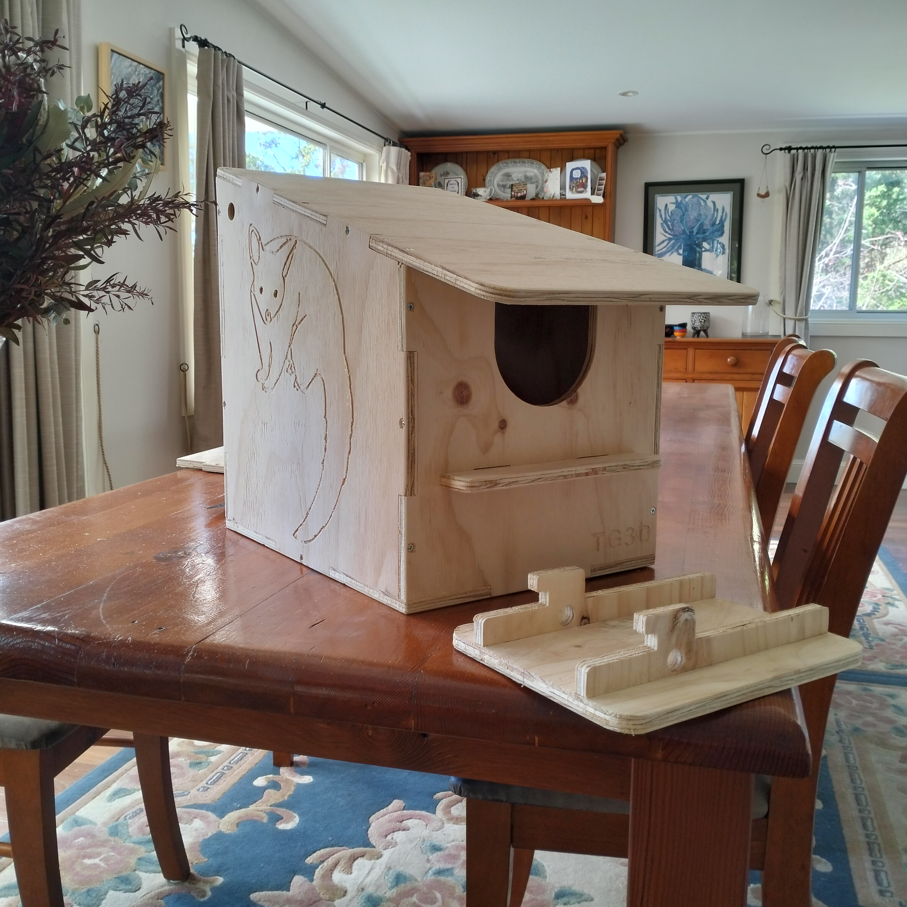
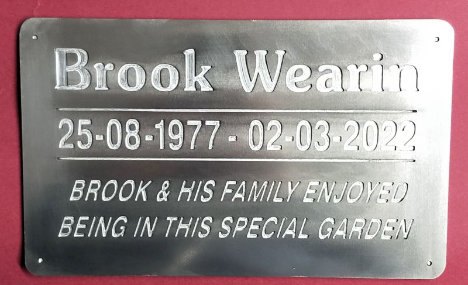
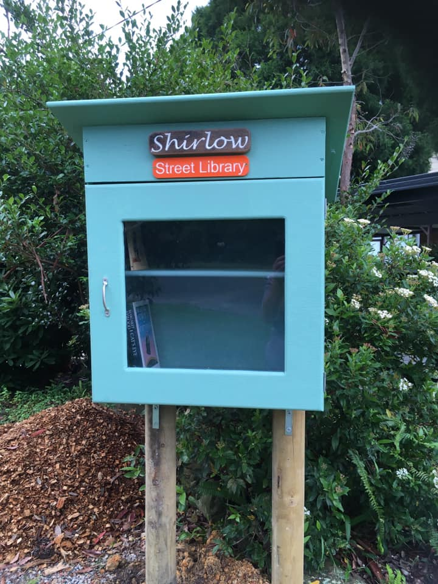
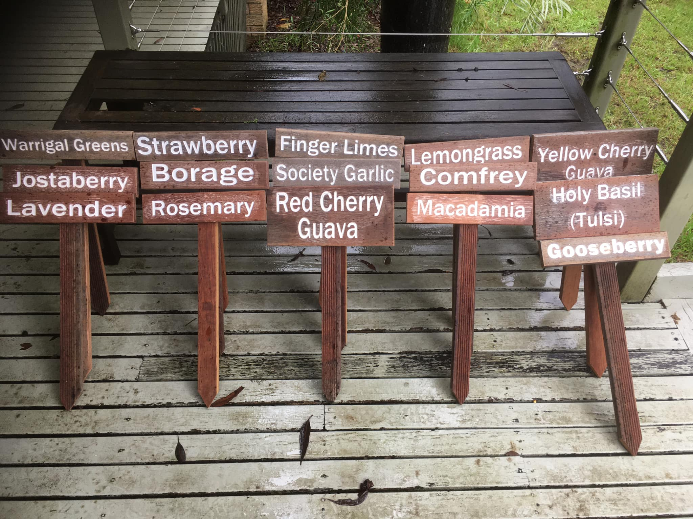

BrushTail Possum box |
Designed in Fusion 360 and CNC cut. The box slots together easily with pre-drilled screw holes. It features carved possum motifs, a perch that extends inside to allow juveniles to exit and an innovative seperate mount to make locating the box safer |
Carved aluminium plaque |
CNC Carved from aluminium, the sign provides a durable, long lasting memorial. |
Street library |
Featuring 3D carved and printed signage, this street library is a well loved community asset |
Garden Signs |
A selection of CNC carved signs for the local community garden |